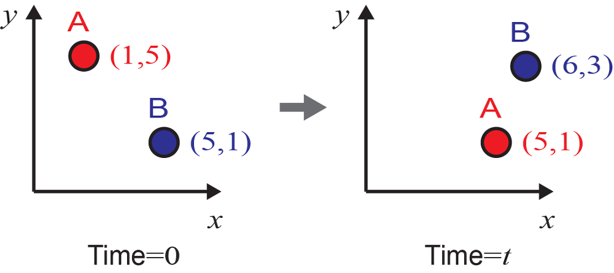

(a) Lagrangian and Eulerian specification

1. Lagrangian specification
- 라그랑지 좌표계는 물체를 따라가면서 기술하는 좌표계이다.
- 중요한 것은 시간 0일 때의 물체의 위치(초기위치)를 좌표로 사용하여 위치를 기술한다는 점
- 물체 A는 라그랑지 기술방법으로 초기 시간에 (1,5,0)인 것이고, 시간 t에서는 (1,5,t)인 것
- 물론, 물체 A의 시간 t에서의 실제 위치는 (5,1)이다.그러므로 초기 위치로부터 시간 t에서의 위치로 보내주는 아래와 맵핑(mapping)함수 M 가 필요
- 물질 A의 라그랑지 좌표는 (label된 초기좌표) 계속 (1,5)로써 시간에 따라 변하지 않는다. 물론 시간이 지난 후, 나중 위치를 함수 r 로 확인할 수 있지만, 라그랑지 방법에서 좌표는 초기위치를 사용함을 다시 새겨두자.
2. Lagrangian specification의 사용 이유
“그냥 A의 경우 (1,5)에서 (5,1)로 이동했다고 하면 되지. 왜 복잡하게 만드는 것인가? 1000개나 100000개 또는 무한개라고 할 수 있는 많은 입자의 좌표를 추적한다고 하자. 이것들이 원래 어디에 있던 물질이고, 어디로 어떤 경로로 얼만큼 이동했느냐를 알고 싶어할 때는 이러한 다소 번거러워 보일 수도 있는 방식이 상당히 쉽고 효과적이다.
예를 들어, 무수히 많은 입자들의 변위(displacement, 위치의 변화)는 아래와 같이 구할 수 있다.
$$ M\left(x_0,y_0,t\right)-\left(x_0,y_0\right) $$$M(x_0, y_0, t)$는 시간 $t$에서의 위치이고 $(x_0, y_0)$는 초기위치이다. 즉, 초기위치와 시간의 함수로써 구할 수 있다.
3. Eulerian specification
- 오일러 좌표계는 물체보다는 고정된 위치를 중요시하는 좌표계
- 이러한 좌표 기술법은 물체 하나하나를 따라가는 것보다 특정 위치에서의 물성을 중요시하는 분야에서 주로 사용
예를 들어, 위에서 위치 (5,1)에 초기에는 물체 B가 있고 시간 t에서는 물체 A가 있다고 하자. 속도의 관점에서 말하면, 초기에 위치 (5,1)의 속도는 물체 B의 속도이며, 시간 t에서의 속도는 물체 A의 속도이다. 이게 바로 오일러 기술 방식이다.
4. 두 기술법의 차이를 이해
- $v_L(x_0, y_0, t)$가 라그랑지안 기술법 이며, 초기좌표가 $x_0$와 $y_0$였던 물질이 시간 $t$가 지난 후에 위치한 지점에서의 속도를 의미.
- $v_E(x, y, t)$가 오일리안 기술법 이며, 그냥 $x$와 $y$라는 위치에서 $t$라는 시간에 우연찮게 놓인 물질의 속도를 의미.
5. Frame, Viewpoint, Specification 관계 및 명확한 구분
‘관점’은 현상을 이해하려는 개념적인 접근 방식이고, ‘기술법’은 그 관점을 수학적으로 구현하는 구체적인 방법론이다. 그리고 이 모든 것은 특정 ‘프레임’ 안에서 이루어진다. 예를 들어, 우리는 정지 프레임에서 유체의 오일리안 관점을 오일러 기술법을 사용하여 분석할 수 있다.
(1) 프레임 (Frame of Reference): 현상을 어디서 (Where) 관측하는가? (관측자의 물리적 위치와 운동 상태를 나타내는 기준계), 예시: 실험실 (정지 프레임), 움직이는 기차 안 (운동 프레임)
(2) 관점 (Viewpoint / Perspective): 현상을 어떤 방식으로 (How to conceptually understand) 이해하고 분석할 것인가? (현상을 바라보는 사고방식이나 철학적 접근), 예시: 개별 입자의 이력에 집중 (라그랑지안 관점), 공간상의 고정된 지점의 변화에 집중 (오일리안 관점)
(3) 기술법 (Description / Formulation): 현상을 어떤 수학적/모델링 방법으로 (How to formally describe) 표현할 것인가? (관점을 구현하기 위한 구체적인 수학적 또는 방법론적 도구), 예시: 유체역학에서 개별 입자의 위치를 시간의 함수로 표현 (라그랑지안 기술법), 공간 변수와 시간 변수의 함수로 장을 표현 (오일리안 기술법).
오일러(Eulerian)와 라그랑지(Lagrangian)의 좌표계의 차이와 물질미분(material derivative) - 성돌의 전자노트